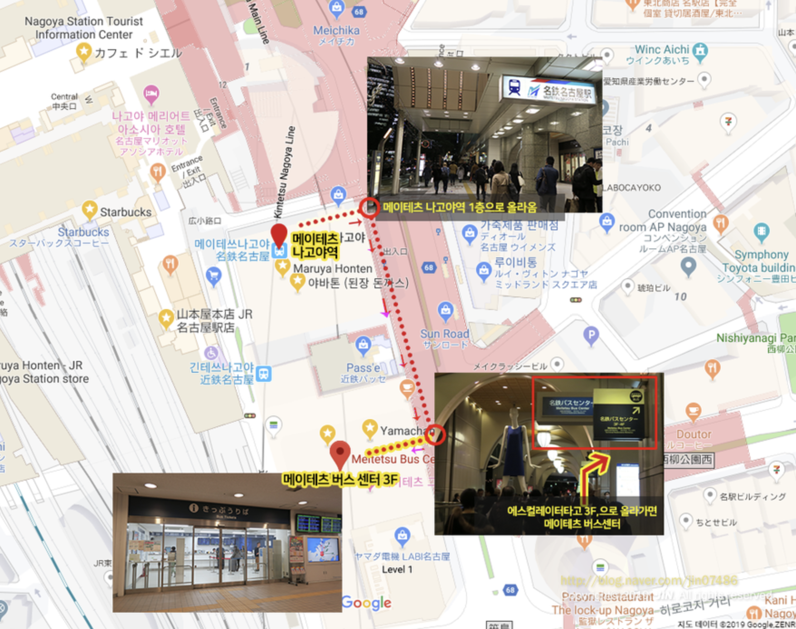

2025.01.30.(1일차)
출발
비행기
일본
숙소
저녁
산책
| 시간 | 일정 | 상세 |
|---|---|---|
| 12:00 → 14:00 | 고속버스 | 잠실 → 인천공항 (1T) 1시간 30분소요 |
| 14:00 → 16:00 | 체크인 및 탑승 | (TERMINAL 1) OZ 118 ASIANA AIRLINES |
| 16:00 → 18:30 | 비행기 | - |
| 18:30 → 19:30 | 숙소 이동 |
시간표🔗 ① 라피트 특급 열차 ★ ▪︎ 도착지: 난카이 난바역 (도보 5분) ▪︎ 소요 시간: 약 35분 ▪︎ 운임: 1,450엔 (라피트 베타 일반석 기준) ② 난카이 공항선 일반 열차 소요 시간: 약 45~50분 운임: 930엔 (일반석) 운행 간격: 15분마다 출발 [숙소] ▪︎ 웰리나 호텔 프리미어 신사이바시🔗 |
| 19:30 → 20:30 | 저녁 |
① 카메 스시 오우신🔗 ▪︎ 제일 유명함. 최근 구글 리뷰에서 비리다는 말이 있음, 그래도 4점대 ② 카미나리 스시🔗 ▪︎ 12피스 4000 ③ 스시 카츠야🔗 ★ ▪︎ 오마카세 : 5000, 7000 있음 |
| 20:30 → | 산책 |
도톤보리 돌아 다니기 ▪︎ 551 호라이 본점 (만두)🔗 ▪︎ 미즈노 (오코노미야끼)🔗 |
2025.01.31. (2일차)
조식
디저트
점심
오사카 성
저녁
| 시간 | 일정 | 상세 |
|---|---|---|
| 조식 | 1인당 ₩ 11,245 | |
| 09:00 → 12:00 | 디저트 |
리쿠로오지산노미세 (치즈케이크)🔗 |
| 12:00 → 13:00 | 점심 |
규카츠 모토무라 난바점🔗 |
| 13:00 → 18:30 | 오사카 성 |
오사카 성🔗 ① 도보 1시간 ★ ② 지하철 30분 가면서 도톤보리 들리기 #카페 찾아봐야함 |
| 18:30 → 20:30 | 저녁 |
쿠로게와규야키니쿠이치 (와규)🔗 |
| 20:30 → | 2차 |
돈소쿠노카도야 (야끼토리)🔗 |
2025.02.01. (3일차)
조식
점심
시장
자유롭게
| 시간 | 일정 | 상세 |
|---|---|---|
| 조식 | 1인당 ₩ 11,245 | |
| 12:00 → 13:00 | 점심 |
이치란 라멘🔗 |
| 13:00 ~ | 에비스초 |
에비스초역🔗 ▪︎ 신세카이 시장🔗 ▪︎ (선택) 아베노 하루카스 (전망대) |
2025.02.02. (4일차)
조식
나고야
숙소
자유롭게
저녁
| 시간 | 일정 | 상세 |
|---|---|---|
| 조식 | 1인당 ₩ 11,245 | |
| 11:00 | 체크아웃 | - |
| 11:20 ~ | 나고야 |
나고야 이동 ① 신칸센 요금 : 6000 ++ 시간 : 50분 오사카 난바역 → 신오사카 → 나고야역 ② 긴테츠 특급 요금 : 5000 시간 : 2시간 30분 오사카 난바역 → 긴테쓰나고야역 ③ 버스 요금 : 1700 시간 : 3시간 난바역 → 나고야오아시스 21 |
| 15:00 | 호텔 체크인 | 호텔 포르자🔗 |
| 03:30 → 19:00 | 자유여행 | ▪︎ 계획없이 자유롭게 동네 둘러보기 |
| 07:00 ~ 08:30 | 저녁식사 | ▪︎ 밥먹을 곳 찾아보기 |
2025.02.03. (5일차)
사카에역
나고야
저녁
산책 및 휴식
| 시간 | 일정 | 상세 |
|---|---|---|
| 07:30 ~ 07:50 | 기상 및 이동 |
메이테츠 버스 센터🔗
가는 법 사진  |
| 08:00 ~ 18:30 | 버스 투어 |
▪︎ 시카라와고, 히다타카야마, 구조하치만 투어 ▪︎ 인당 2,000엔 현지 지불 ▪︎ 티켓 구매 🔗 |
| 07:00 ~ 08:30 | 저녁식사 | ▪︎ 식사할 곳 찾기 |
| 08:30 ~ 09:30 | 산책 | ▪︎ 야식 포장하기 |
| 09:30 ~ 10:30 | 휴식 | ▪︎ 짐 미리 정리하기 |
2025.02.04. (6일차)
조식
체크아웃
점심
공항
THE END
| 시간 | 일정 | 상세 |
|---|---|---|
| 조식 | 1인당 ₩ 11,245 | |
| 11:00 | 체크아웃 | ▪︎ 호텔에 짐 맡기기 |
| 11:00 ~ 12:30 | 점심식사 | ▪︎ 먹을 곳 찾기 |
| 03:00 ~ 04:00 | 나고야역 → 공항 | ▪︎참고 사이트🔗 |
| 18:20 | 나고야 → 인천 |